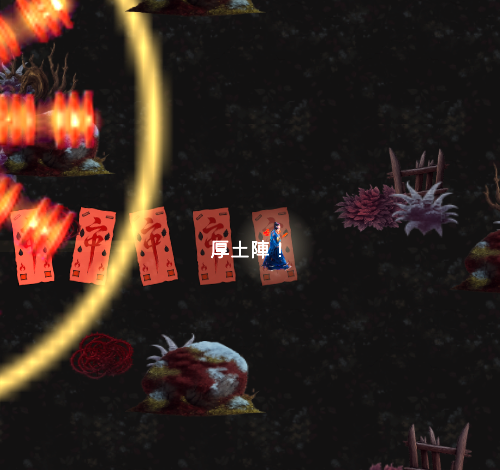
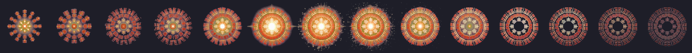

手搓廣告遊戲選集 · 吸血鬼復仇 · 道士修正
形狀辨識可行，但量出兩個不量就一定會出貨的問題： 化簡容差憑感覺訂差了一個數量級；而連續繞圈原本會被判成五芒星，五次全中。
三點都做完了。評估結果是範圍合理，但過程中量出兩個「不量就一定會出貨」的問題， 兩個都在下面。
你的直覺是對的，而且分工本來就更清楚：符咒管遠程（Zone 延遲地帶）、劍管近身。
改動範圍：純資料，一行程式都沒動。 武器家族是從資料推導的
（VrWeapons.FamilyOf），拿掉 Speed／Homing、給 Radius 與 Back，
它就自動變成 Arc 家族（跟十字斬、撕裂爪同一條路）。三等起前後都砍得到。
進化「五雷斬」也一起改成揮出五道雷光劍氣。實測家族 = Arc ✓
| 形狀 | 陣 | 效果 | 難度 |
|---|---|---|---|
| 圓 | 周天陣 | 圈內傷害 ＋ 回血 12% | 保底，隨便繞就有 |
| 三角 | 離火陣 | 圈內留下燃燒地帶 | 中 |
| 方 | 厚土陣 | 圈內定身 ＋ 你受傷減免 | 中 |
| 五芒星 | 五雷陣 | 拖向中心 ＋ 超高額斬擊 | 最難，回報最大 |
沒有用樣板比對（那需要玩家畫得準，做不到）。改成三個對「畫得歪」寬容的 整體幾何量：圓度、角數（平滑 → RDP 化簡後剩幾個頂點）、自交數。 另外加了 0.75 秒的等待窗——不然五芒星的第一次自交在第二個角就發生， 會在星星畫完之前先觸發成一個小圈。
第一版我把 RDP 的容差訂成半徑的 0.14。乾淨的合成形狀 4/4 全對， 但一加雜訊就崩——12% 雜訊下三角形只認得出 8%，而且用搖桿真的畫一個方形 會被判成圓。原因很單純：每一個手抖都被當成一個角。
所以掃了六個值：
eps 0.10 → 三角 0% 方 0% eps 0.22 → 三角 78% 方 98%
eps 0.14 → 三角 8% 方 0% eps 0.26 → 三角 85% 方 100%
eps 0.18 → 三角 53% 方 60% eps 0.32 → 三角 98% 方 100%
取 0.28（0.32 三角更準，但方形會開始被過度化簡成三角）。
這個更嚴重。繞圈拉怪是這遊戲最自然的動作，而連續繞圈畫出來的是一個螺旋 ——自交 53~69 次。我原本寫「自交 ≥ 3 就是星」，結果回歸測試連繞五圈， 五次全部拿到五雷陣（最強的那個）。等於什麼都不做就拿最高獎勵， 我設計的難度階梯整個不存在。
量出來的差別其實很清楚：
五芒星 自交 5 角 6 圓度 0.20
連續繞圈 自交 53~69 角 16~21 圓度 0.23
改成「自交要在 3~12 之間、而且角不超過 9」。超出區間一律退回周天陣。 修完之後連繞五圈，五次都判成周天陣 ✓
6% 雜訊：圓 100% 三角 100% 方 100% 星 100%
12% 雜訊：圓 88% 三角 93% 方 95% 星 88%
20% 雜訊：圓 50% 三角 18% 方 18% 星 0%
20% 雜訊那一列不是失敗：認不出來時一律落回周天陣，所以 繞了就一定有回報，只是拿不到特殊的那三種。這是刻意的保底設計—— 原本「繞就有」的手感留著，上面多了一個技術上限。
而且用搖桿真的走一個方形，判成厚土陣 ✓（不只是純函式對）。

畫面上那條發亮的金線，是玩家真正走出來的那條路徑——不是一個通用的法陣圖案。 這樣一眼就看得到「我剛剛繞的是這個形狀」，比任何預製圖案都清楚。 線會先亮起來再一邊變細一邊淡出，像陣紋燒完。
外圈同時有一個擴散環，中心疊上手繪的法陣爆發素材：

同心卦爻環依序落位 → 金光爆開，正好對上「陣成」那一瞬。 再加畫面震動與吼聲。不再只是跳一行字。
美術這批 $0.64（法陣爆發 ＋ 桃木劍刀光）。
還沒出新 TestFlight——build 46 不含這批。要出 build 47 說一聲。
→ 上一頁：解鎖條件與星樞法師